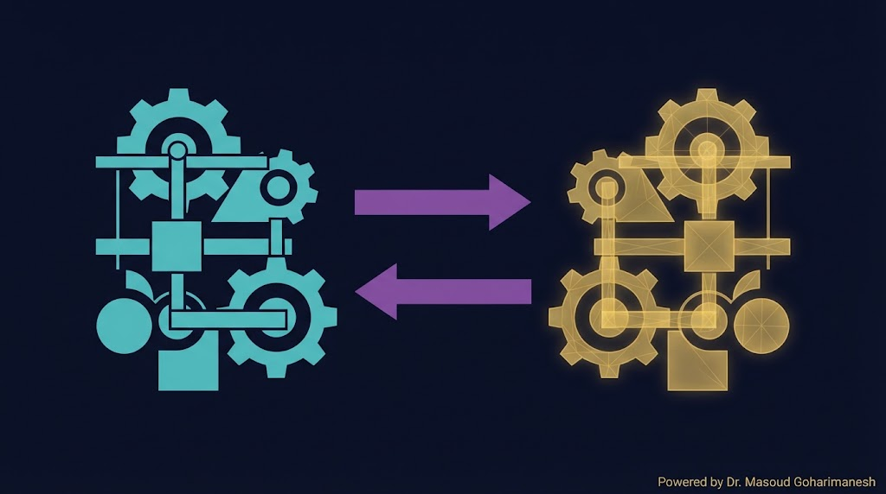
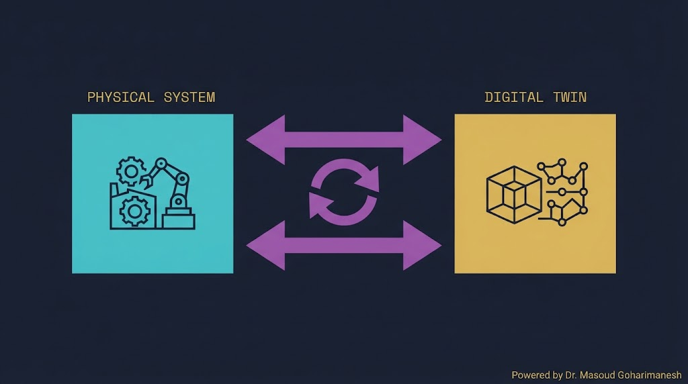
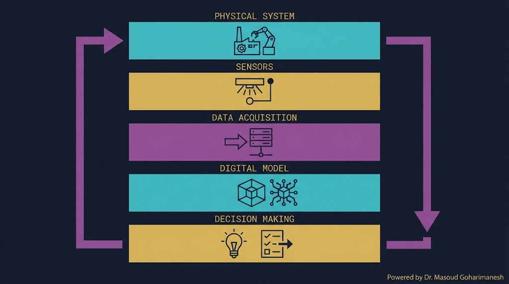
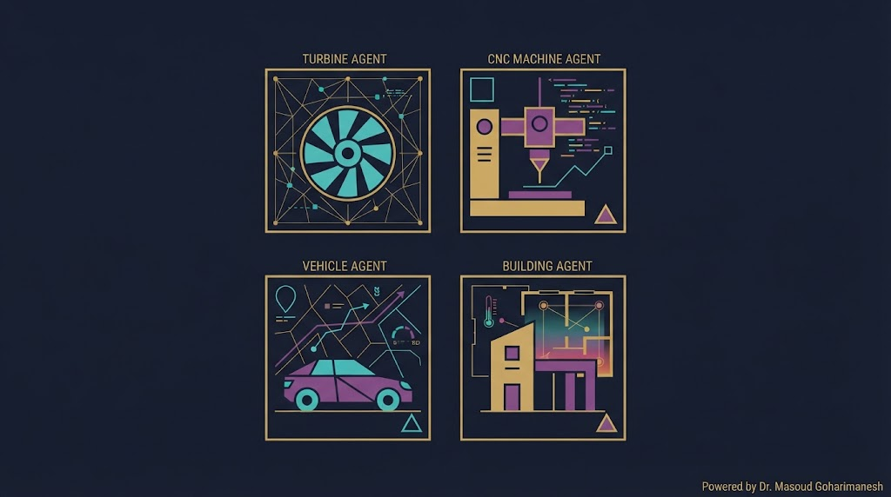
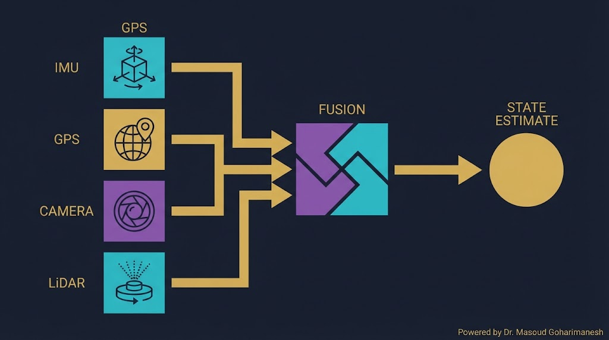
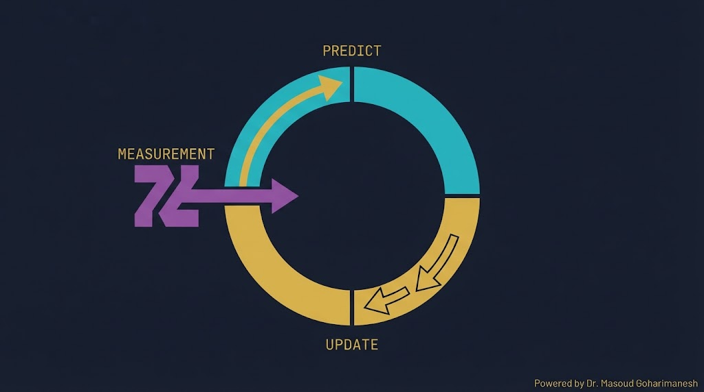
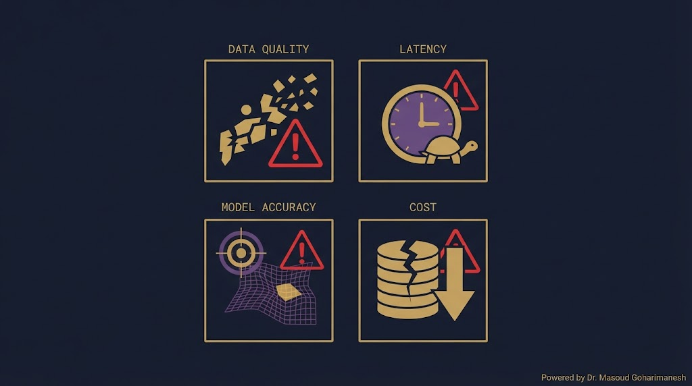

جلسه ۲۲ — Digital Twin
جلسه ۲۲ — Digital Twin
جلسه ۲۲ — Digital Twin
جلسه ۲۲ — Digital Twin
 ستاره این جلسه
به یاد شهدای والامقام
ستاره این جلسه
به یاد شهدای والامقامDigital Twin · Sensor Fusion · Kalman Filter
When Physical Meets Digital
PINN، Autograd، معادله گرما
Digital Twin، Sensor Fusion، Kalman
✅ Digital Twin چیست؟
✅ معماری و همگامسازی
✅ Sensor Fusion
✅ Kalman Filter
✅ ML + Kalman
✅ کاربرد در مکانیک
فرض کنید یک توربین بادی در یک مزرعه دورافتاده دارید. نمیتوانید هر روز آن را بازرسی کنید. اما اگر یک نسخه دیجیتال زنده از آن داشته باشید که با سنسورها همزمان با واقعیت بهروز میشود، میتوانید:
قبل از خرابی، هشدار بگیرید
عملکرد را در شبیهسازی بهبود دهید
بدون خطر در واقعیت
از گذشته بیاموزید

Digital Twin (دوقلوی دیجیتال) یک نسخه مجازی از یک سیستم فیزیکی است که با آن همزمان و بلادرنگ بهروز میشود.
۱. سیستم فیزیکی
۲. مدل مجازی
۳. اتصال داده (سنسورها)
• فیزیکی → دیجیتال: دادهبرداری
• دیجیتال → فیزیکی: کنترل


| لایه | عملکرد |
|---|---|
| ۱. Physical | سیستم واقعی با سنسورها |
| ۲. Data | جمعآوری و انتقال داده |
| ۳. Model | مدل ریاضی/فیزیکی/ML |
| ۴. Simulation | شبیهسازی و پیشبینی |
| ۵. Decision | تصمیمگیری و کنترل |
روی هر لایه کلیک کنید تا توضیح آن را ببینید.
مهمترین ویژگی Digital Twin: زمانبندی. دو حالت اصلی:
هر میلیثانیه — ایدهآل اما گران
هر ثانیه — معمول در صنعت
هر دقیقه/ساعت — برای تحلیل تاریخی

پیشبینی خرابی پره
بهینهسازی فرآیند تراش
پیشبینی عمر قطعات
مدیریت انرژی HVAC
پایش موتور جت
نگهداری پیشبینانه
هر حسگر (دوربین، IMU، GPS، LiDAR) محدودیت خودش را دارد. Sensor Fusion این دادهها را ترکیب میکند تا تصویر کاملتر و دقیقتری از وضعیت سیستم بگیریم.

ترکیب دادهها → دقت بالاتر
اگر یک حسگر خراب شود، بقیه کار میکنند
پردازش همزمان
سهم هر حسگر را تغییر دهید و ببینید تخمین نهایی چطور تغییر میکند.
Kalman Filter بهترین تخمینزن خطی برای سیستمهای نویزی است. از دو مرحله تشکیل شده:

$\hat{x}_k^- = A \hat{x}_{k-1} + Bu$
پیشبینی وضعیت بعدی
$K = P^- H^T (H P^- H^T + R)^{-1}$
تصحیح با اندازهگیری
فیلتر کالمن در سال ۱۹۶۰ توسط Rudolf Kalman معرفی شد — و امروزه در همهجا از GPS تا موشکها استفاده میشود.
فیلتر کالمن فقط برای سیستمهای خطی کار میکند. برای غیرخطی، از EKF استفاده میکنیم که با ژاکوبین خطیسازی میکند.
برای سیستمهای غیرخطی
در غیرخطیهای شدید ضعیف
Unscented — بدون ژاکوبین
نویز اندازهگیری را تغییر دهید و ببینید Kalman چطور تخمین را بهبود میدهد.
Kalman کلاسیک فرض میکند مدل سیستم را میدانیم. اما اگر ندانیم؟ از ML برای یادگیری مدل استفاده میکنیم.
ML مدل انتقال را یاد بگیرد، Kalman تخمین بزند
CNN + Transformer برای ترکیب دادههای چندحسگری
K را با شبکه عصبی یاد بگیریم
| حوزه | کاربرد Digital Twin | مزیت |
|---|---|---|
| خودرو | پیشبینی خرابی موتور | کاهش توقف |
| هوافضا | پایش توربین | ایمنی |
| نیروگاه | بهینهسازی توربین | راندمان |
| تولید | خط تولید هوشمند | کیفیت |
| ساختمان | مدیریت HVAC | مصرف انرژی |

دادههای نویزی یا ناقص
Latency در همگامسازی
مدل ممکن است واقعیت را دقیق نشان ندهد
پیادهسازی گران است
دور، گشتاور، دما، لرزش، سرعت باد
مدل فیزیکی پره + ML
پیشبینی خرابی پره
کاهش ۳۰٪ توقف غیربرنامهریزی
import numpy as np import matplotlib.pyplot as plt class KalmanFilter1D: def __init__(self, Q=0.01, R=0.1, x0=0, P0=1): self.Q = Q # process noise self.R = R # measurement noise self.x = x0 # state estimate self.P = P0 # estimate covariance def predict(self): # x_k = x_{k-1} (constant model) self.P = self.P + self.Q return self.x def update(self, z): # Kalman Gain K = self.P / (self.P + self.R) # Update state self.x = self.x + K * (z - self.x) # Update covariance self.P = (1 - K) * self.P return self.x # تست: سیگنال واقعی + نویز np.random.seed(42) N = 100 true_value = 10.0 measurements = true_value + np.random.randn(N) * 1.0 # فیلتر کالمن kf = KalmanFilter1D(Q=0.01, R=1.0, x0=0, P0=1) estimates = [] for z in measurements: kf.predict() x_est = kf.update(z) estimates.append(x_est) # رسم plt.plot(measurements, 'r.', alpha=0.5, label='Measurements') plt.plot(estimates, 'b-', linewidth=2, label='Kalman') plt.axhline(true_value, color='g', linestyle='--', label='True') plt.legend() plt.show()
import numpy as np # دادههای سه حسگر با نویزهای مختلف np.random.seed(42) N = 100 true_value = 10.0 # هر حسگر با نویز متفاوت imu = true_value + np.random.randn(N) * 0.5 # نویز کم gps = true_value + np.random.randn(N) * 1.5 # نویز متوسط cam = true_value + np.random.randn(N) * 2.0 # نویز زیاد # ۱. میانگین ساده simple_avg = (imu + gps + cam) / 3 # ۲. میانگین وزنی بر اساس واریانس # وزن هر حسگر = 1 / variance w_imu = 1 / np.var(imu - true_value) w_gps = 1 / np.var(gps - true_value) w_cam = 1 / np.var(cam - true_value) w_sum = w_imu + w_gps + w_cam weighted_avg = (w_imu*imu + w_gps*gps + w_cam*cam) / w_sum # ۳. مقایسه RMSE rmse_imu = np.sqrt(np.mean((imu - true_value)**2)) rmse_gps = np.sqrt(np.mean((gps - true_value)**2)) rmse_cam = np.sqrt(np.mean((cam - true_value)**2)) rmse_simple = np.sqrt(np.mean((simple_avg - true_value)**2)) rmse_weighted = np.sqrt(np.mean((weighted_avg - true_value)**2)) print(f"IMU RMSE: {rmse_imu:.3f}") print(f"GPS RMSE: {rmse_gps:.3f}") print(f"Camera RMSE: {rmse_cam:.3f}") print(f"Simple Average RMSE: {rmse_simple:.3f}") print(f"Weighted Average RMSE: {rmse_weighted:.3f}")
[AI] HW22 - نام - شماره دانشجویی به arcslab.uth@gmail.com
جستوجوی پروژههای Digital Twin
جلسه ۲۲ — اصلیتحلیل Kalman Filter
پشتیبانکدنویسی Sensor Fusion
پیشنهادیدر Perplexity جستوجو کنید: «Digital Twin predictive maintenance 2024» و ۳ مقاله معتبر پیدا کنید.
سیستم فیزیکی + مدل مجازی + همگامسازی
ترکیب چند حسگر برای دقت بالاتر
تخمین بهینه در سیستمهای نویزی
برای سیستمهای غیرخطی
ترکیب مدرن برای سیستمهای پیچیده
Next Session: Final Project — Definition & Methodology
• انتخاب پروژه از ۱۰ عنوان
• نوشتن پروپوزال ۲ صفحهای
• مرور پیشینه
• روششناسی
• جدول زمانبندی